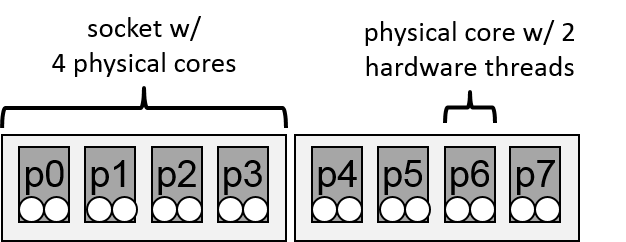

proc_bind Clause
Contents
proc_bind Clause#
The following examples demonstrate how to use the proc_bind clause to control the thread binding for a team of threads in a parallel region. The machine architecture is depicted in Figure 4.1. It consists of two sockets, each equipped with a quad-core processor and configured to execute two hardware threads simultaneously on each core. These examples assume a contiguous core numbering starting from 0, such that the hardware threads 0,1 form the first physical core.

FIGURE 4.1: A machine architecture with two quad-core processors
The following equivalent place list declarations consist of eight places (which we designate as p0 to p7):
OMP_PLACES= ” {0,1},{2,3},{4,5},{6,7},{8,9},{10,11},{12,13},{14,15} “
or
OMP_PLACES= “{0:2}:8:2”
Spread Affinity Policy#
affinity!spread policy spread policy spread policy spread policy
The following example shows the result of the spread affinity policy on the partition list when the number of threads is less than or equal to the number of places in the parent’s place partition, for the machine architecture depicted above. Note that the threads are bound to the first place of each subpartition.
//%compiler: clang
//%cflags: -fopenmp
/*
* name: affinity.1
* type: C
* version: omp_4.0
*/
void work();
int main()
{
#pragma omp parallel proc_bind(spread) num_threads(4)
{
work();
}
return 0;
}
!!%compiler: gfortran
!!%cflags: -fopenmp
! name: affinity.1
! type: F-fixed
! version: omp_4.0
PROGRAM EXAMPLE
!$OMP PARALLEL PROC_BIND(SPREAD) NUM_THREADS(4)
CALL WORK()
!$OMP END PARALLEL
END PROGRAM EXAMPLE
It is unspecified on which place the primary thread is initially started. If the primary thread is initially started on p0, the following placement of threads will be applied in the parallel region:
thread 0 executes on p0 with the place partition p0,p1
thread 1 executes on p2 with the place partition p2,p3
thread 2 executes on p4 with the place partition p4,p5
thread 3 executes on p6 with the place partition p6,p7
If the primary thread would initially be started on p2, the placement of threads and distribution of the place partition would be as follows:
thread 0 executes on p2 with the place partition p2,p3
thread 1 executes on p4 with the place partition p4,p5
thread 2 executes on p6 with the place partition p6,p7
thread 3 executes on p0 with the place partition p0,p1
The following example illustrates the spread thread affinity policy when the number of threads is greater than the number of places in the parent’s place partition.
Let T be the number of threads in the team, and P be the number of places in the parent’s place partition. The first T/P threads of the team (including the primary thread) execute on the parent’s place. The next T/P threads execute on the next place in the place partition, and so on, with wrap around.
//%compiler: clang
//%cflags: -fopenmp
/*
* name: affinity.2
* type: C
* version: omp_4.0
*/
void work();
void foo()
{
#pragma omp parallel num_threads(16) proc_bind(spread)
{
work();
}
}
!!%compiler: gfortran
!!%cflags: -fopenmp
! name: affinity.2
! type: F-free
! version: omp_4.0
subroutine foo
!$omp parallel num_threads(16) proc_bind(spread)
call work()
!$omp end parallel
end subroutine
It is unspecified on which place the primary thread is initially started. If the primary thread is initially started on p0, the following placement of threads will be applied in the parallel region:
threads 0,1 execute on p0 with the place partition p0
threads 2,3 execute on p1 with the place partition p1
threads 4,5 execute on p2 with the place partition p2
threads 6,7 execute on p3 with the place partition p3
threads 8,9 execute on p4 with the place partition p4
threads 10,11 execute on p5 with the place partition p5
threads 12,13 execute on p6 with the place partition p6
threads 14,15 execute on p7 with the place partition p7
If the primary thread would initially be started on p2, the placement of threads and distribution of the place partition would be as follows:
threads 0,1 execute on p2 with the place partition p2
threads 2,3 execute on p3 with the place partition p3
threads 4,5 execute on p4 with the place partition p4
threads 6,7 execute on p5 with the place partition p5
threads 8,9 execute on p6 with the place partition p6
threads 10,11 execute on p7 with the place partition p7
threads 12,13 execute on p0 with the place partition p0
threads 14,15 execute on p1 with the place partition p1
Close Affinity Policy#
The following example shows the result of the close affinity policy on the partition list when the number of threads is less than or equal to the number of places in parent’s place partition, for the machine architecture depicted above. The place partition is not changed by the close policy.
//%compiler: clang
//%cflags: -fopenmp
/*
* name: affinity.3
* type: C
* version: omp_4.0
*/
void work();
int main()
{
#pragma omp parallel proc_bind(close) num_threads(4)
{
work();
}
return 0;
}
!!%compiler: gfortran
!!%cflags: -fopenmp
! name: affinity.3
! type: F-fixed
! version: omp_4.0
PROGRAM EXAMPLE
!$OMP PARALLEL PROC_BIND(CLOSE) NUM_THREADS(4)
CALL WORK()
!$OMP END PARALLEL
END PROGRAM EXAMPLE
It is unspecified on which place the primary thread is initially started. If the primary thread is initially started on p0, the following placement of threads will be applied in the parallel region:
thread 0 executes on p0 with the place partition p0-p7
thread 1 executes on p1 with the place partition p0-p7
thread 2 executes on p2 with the place partition p0-p7
thread 3 executes on p3 with the place partition p0-p7
If the primary thread would initially be started on p2, the placement of threads and distribution of the place partition would be as follows:
thread 0 executes on p2 with the place partition p0-p7
thread 1 executes on p3 with the place partition p0-p7
thread 2 executes on p4 with the place partition p0-p7
thread 3 executes on p5 with the place partition p0-p7
The following example illustrates the close thread affinity policy when the number of threads is greater than the number of places in the parent’s place partition.
Let T be the number of threads in the team, and P be the number of places in the parent’s place partition. The first T/P threads of the team (including the primary thread) execute on the parent’s place. The next T/P threads execute on the next place in the place partition, and so on, with wrap around. The place partition is not changed by the close policy.
//%compiler: clang
//%cflags: -fopenmp
/*
* name: affinity.4
* type: C
* version: omp_4.0
*/
void work();
void foo()
{
#pragma omp parallel num_threads(16) proc_bind(close)
{
work();
}
}
!!%compiler: gfortran
!!%cflags: -fopenmp
! name: affinity.4
! type: F-free
! version: omp_4.0
subroutine foo
!$omp parallel num_threads(16) proc_bind(close)
call work()
!$omp end parallel
end subroutine
It is unspecified on which place the primary thread is initially started. If the primary thread is initially running on p0, the following placement of threads will be applied in the parallel region:
threads 0,1 execute on p0 with the place partition p0-p7
threads 2,3 execute on p1 with the place partition p0-p7
threads 4,5 execute on p2 with the place partition p0-p7
threads 6,7 execute on p3 with the place partition p0-p7
threads 8,9 execute on p4 with the place partition p0-p7
threads 10,11 execute on p5 with the place partition p0-p7
threads 12,13 execute on p6 with the place partition p0-p7
threads 14,15 execute on p7 with the place partition p0-p7
If the primary thread would initially be started on p2, the placement of threads and distribution of the place partition would be as follows:
threads 0,1 execute on p2 with the place partition p0-p7
threads 2,3 execute on p3 with the place partition p0-p7
threads 4,5 execute on p4 with the place partition p0-p7
threads 6,7 execute on p5 with the place partition p0-p7
threads 8,9 execute on p6 with the place partition p0-p7
threads 10,11 execute on p7 with the place partition p0-p7
threads 12,13 execute on p0 with the place partition p0-p7
threads 14,15 execute on p1 with the place partition p0-p7
Primary Affinity Policy#
The following example shows the result of the primary affinity policy on the partition list for the machine architecture depicted above. The place partition is not changed by the primary policy.
//%compiler: clang
//%cflags: -fopenmp
/*
* name: affinity.5
* type: C
* version: omp_5.1
*/
void work();
int main()
{
#pragma omp parallel proc_bind(primary) num_threads(4)
{
work();
}
return 0;
}
!!%compiler: gfortran
!!%cflags: -fopenmp
! name: affinity.5
! type: F-fixed
! version: omp_5.1
PROGRAM EXAMPLE
!$OMP PARALLEL PROC_BIND(primary) NUM_THREADS(4)
CALL WORK()
!$OMP END PARALLEL
END PROGRAM EXAMPLE
It is unspecified on which place the primary thread is initially started. If the primary thread is initially running on p0, the following placement of threads will be applied in the parallel region:
threads 0-3 execute on p0 with the place partition p0-p7
If the primary thread would initially be started on p2, the placement of threads and distribution of the place partition would be as follows:
threads 0-3 execute on p2 with the place partition p0-p7